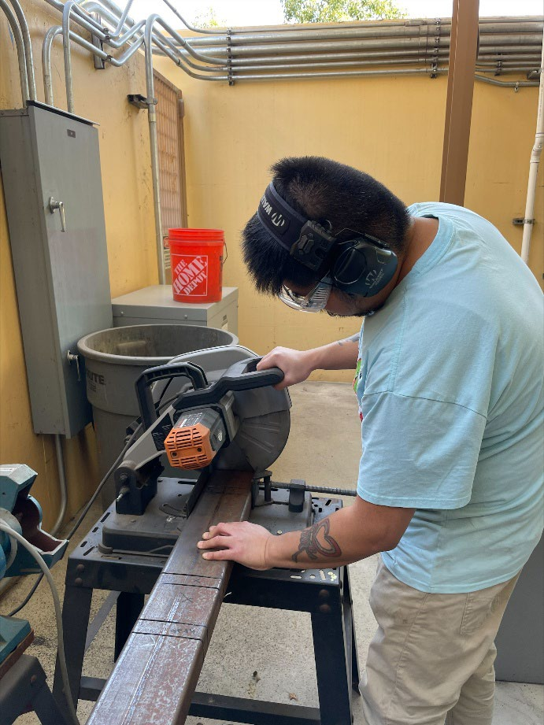
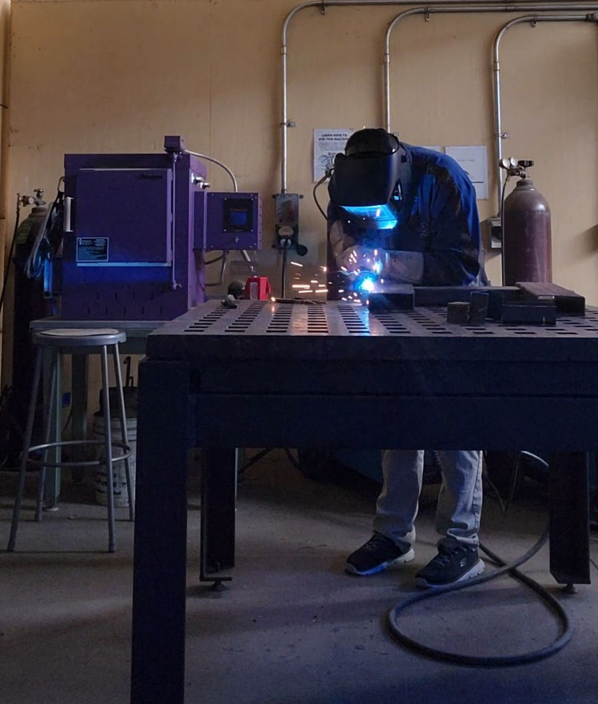
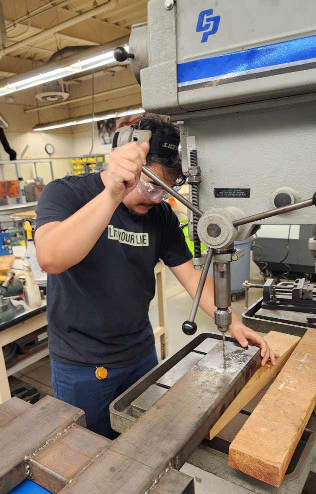

1. Prototype the latch geometry
Early models were used to evaluate engagement, alignment, and the overall locking behavior before committing to metal parts.
2. Waterjet and finish the latch plates
6061 aluminum latch components were waterjet cut, then drilled, deburred, sanded, and assembled. Smooth cam contact surfaces were important for reliable engagement.
3. Fabricate the dolly structure
Structural steel tubing and sheet steel were cut and welded into the fork sleeves, extension, supports, and foldable cradle.
4. Assemble and fit-check
Hardware was installed, moving interfaces were checked, and the attachment was mounted to the existing Genie dolly for operational verification.



Design for manufacturability mattered.
The final concept used fabrication methods already supported by Cal Poly facilities—waterjet cutting, drilling, sanding, welding, and conventional assembly—so the proof of concept could be built and iterated by a student team.